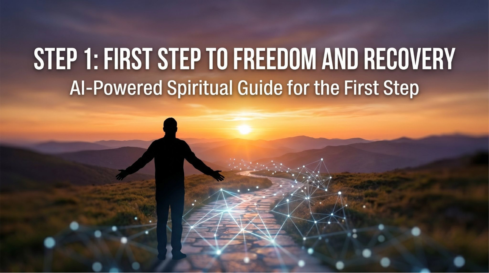

The bot is divided into 3 different tracks. Each member can choose the track that fits exactly where they currently are in their recovery journey:
Simply click the bot link below and send it the following message: "Hi, I want to start working on the first step."